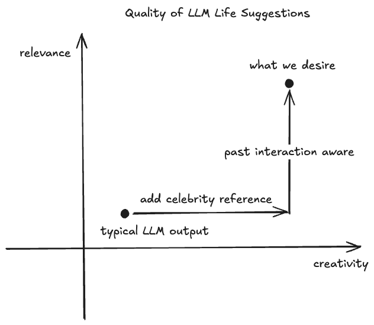

Echo Alpha 版本发布：让内心的声音陪你写作
我们很高兴宣布 Echo 的 Alpha 版本正式完成。这是一个受《极乐迪斯科》启发的创新日记应用，让你的内心声音在写作时实时评论你的思绪。
Alpha 阶段核心成果：
Alpha 阶段的核心成果包括：
实时声线评论系统：采用基于能量池的智能触发机制，支持中英文双语，并具备水彩笔刷风格的短语高亮效果。
数据持久化与用户系统方面，我们实现了 JWT 认证机制，使用 SQLite 数据库存储 sessions、用户偏好、每日图片与分析报告，并支持从 localStorage（访客模式）向数据库的平滑迁移。同时提供了日历功能以保存和加载历史条目。
卡组系统（Deck System）包括系统预设卡组与用户自定义功能，支持 Fork 机制使用户能复制并修改系统卡组，配套完整的 CRUD 操作界面以及社区分享机制。
Timeline 模块可每日自动生成时间线图片。
智能分析功能可生成对用户长期行为的分析，如 Echoes（回声）、Traits（特质）和 Patterns（模式）。
在技术架构方面，前端使用 React 19 + TypeScript + Vite，后端采用 Python FastAPI 与自研智能体框架 PolyCLI 构建。
名人经历搜索引擎先做成了独立应用： Life Experience Search Engine
部署状态： 已部署至生产环境 https://lexicalmathical.com/ink-and-memory/
我们的交付过程采用了持续迭代 + AI 辅助总结的方式：
我们采用了 Daily Scrum 实践，每天记录项目进展、遇到的问题和解决方案，并使用 Claude Code 作为核心开发工具，确保代码库与文档持续同步更新。
在文档记录方面，我们将关键技术决策写入 CLAUDE.md 文件，并通过 @@@ 注释标记代码中的重要逻辑。每个主要功能也有对应的文档说明。
我们还使用 AI 工具辅助总结，回顾 git commit 历史，自动提取项目的关键功能点与技术亮点，并生成用户文档和 API 说明。
识别的风险：
用户体验风险：过度打扰
风险描述：声线评论过于频繁可能打断写作流。应对方法包括引入能量池系统，只有积累到 40 能量才触发评论；加入碰撞检测机制以避免重复高亮同一段文字；并允许用户关闭特定声线。
数据迁移风险：localStorage → 数据库
风险描述：用户在迁移过程中可能丢失数据。应对方法包括实现导入与导出功能，在首次登录时引导用户完成迁移，并保留 localStorage 作为备用。效果：迁移过程平滑，未出现数据丢失情况。
项目管理风险：Scope Creep
风险描述：功能不断膨胀，可能导致无法按时交付。应对方法包括坚持 MVP 思维，对每个新功能都反复追问“是否必须”；采用 Vibe-coding 方法先做快速原型，再根据观察结果决定是否保留；并利用 TodoWrite 工具持续跟踪任务。效果：虽然中途新增了 Deck System 等功能，但核心体验始终得以聚焦。
目前我们暂未请教学院的工程导师，以下是我们自己总结出的经验。
核心理念：
"Code is cheap. Show me your talk." 在写代码前应充分思考和设计，使用对话来理清思路。代码应该是思考的结果，而不是试错的过程。
最小实现原则强调“我们在用复杂度去买功能”。每增加一个功能都需评估复杂度成本，强调简单可维护比完美但复杂的方案更好。
基于事实的调试方法提醒我们：“Never use a 'match' based approach to debug. Use a 'print' based approach.” 要先观察现象，不要猜测，console.log 和 print 是最可靠的工具。
专业客观性在于尊重事实比尊重自我更重要。当发现错误时，要立即承认并修正。“A cat dies every time you are overly agreeable”，因此必须保持平衡和坦率的沟通。
我们的方法采用非线性进展模式，并非每天固定距离前进，而是采用“探索-固化-重构”的节奏。有时一天完成核心功能，第二天重构，比如写作界面的 UI，时间线 UI，评论触发机制等都经历过重构。
优点方面，包括高度灵活，可以快速响应新想法（如 Deck System 是中途加入的）；质量优先，不为了 deadline 而妥协代码质量；AI 深度集成，使用 Claude Code 作为主力开发工具，效率极高；以及文档即代码，CLAUDE.md 和代码同步更新，上手成本低。
缺点方面包括进度难以预测，难以提前估计功能所需时间；Scope 控制难，容易陷入“这个功能也很酷”的陷阱；单人开发局限，缺少 code review 和设计讨论；测试覆盖不足，主要依赖手动测试，缺乏自动化测试。
进度模式分析显示我们的进度更像是“波浪式前进”而非匀速直线：
Week 1: 核心编辑器 + LLM 集成（快速原型）
Week 2: 碰撞检测 + 状态管理（深度打磨）
Week 3: 认证系统 + 数据库（架构升级）
Week 4: Deck System + UI 优化（功能扩展）
这种模式的好处是每个阶段都能交付可用的功能，而不是等到最后才集成。
作为一个深度使用 AI 辅助开发的项目，我们的实践：
我们使用 Agent Talk 系统来实现不同电脑、不同 IDE 的 Agent 之间的信息交互，具备聊天室、文件上传、下载的功能。
我们把 AI 编程中收获的实践经验总结到了这个 repo 中: GitHub - shuxueshuxue/vibe-coding-tutorial